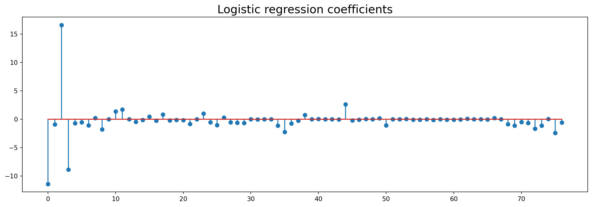

Code
import os
import sys
os.environ['PYSPARK_PYTHON'] = sys.executable
os.environ['PYSPARK_DRIVER_PYTHON'] = sys.executablepyspark for data preprocessingWe want to use pyspark to preprocess a potentially huge dataset used for web-marketing.
The data is a parquet file which contains a dataframe with 8 columns:
xid: unique user idaction: type of action. ‘C’ is a click, ‘O’ or ‘VSL’ is a web-displaydate: date of the actionwebsite_id: unique id of the websiteurl: url of the webpagecategory_id: id of the displayzipcode: postal zipcode of the userdevice: type of device used by the userUsing pyspark.sql we want to do the following things:
Then, we want to construct a classifier to predict the click on the category 1204. Here is an agenda for this:
import os
import sys
os.environ['PYSPARK_PYTHON'] = sys.executable
os.environ['PYSPARK_DRIVER_PYTHON'] = sys.executablefrom pyspark.sql import SparkSessionSo far, we used the local mode.
To launch spark in standalone mode, assuming the current working directory is $SPARK_HOME
$ ./sbin/sWe may tart-master.sh --ip localhost
>>> starting org.apache.spark.deploy.master.Master, logging to ...
$ ./sbin/start-worker.sh spark://localhost:7077We may now launch the instance of SparkSession, setting explicitly the master node and the port to communicate with the master.
SparkUI should be reachable at localhost:4040.
The master can be monitored at localhost:8080
from pyspark import SparkConf, SparkContext
from pyspark.sql import SparkSession
from pyspark.sql import functions as fn
from pyspark.sql.functions import col
spark = (SparkSession
.builder
.appName("Taming Webdata")
.getOrCreate()
)
sc = spark._sc25/03/10 17:19:45 WARN Utils: Your hostname, boucheron-Precision-5480 resolves to a loopback address: 127.0.1.1; using 172.23.32.10 instead (on interface enxac91a1bd3e89)
25/03/10 17:19:45 WARN Utils: Set SPARK_LOCAL_IP if you need to bind to another address
Setting default log level to "WARN".
To adjust logging level use sc.setLogLevel(newLevel). For SparkR, use setLogLevel(newLevel).
25/03/10 17:19:45 WARN NativeCodeLoader: Unable to load native-hadoop library for your platform... using builtin-java classes where applicable
25/03/10 17:19:46 WARN Utils: Service 'SparkUI' could not bind on port 4040. Attempting port 4041.spark = SparkSession.builder \
.appName("Spark webdata") \
.master("spark://localhost:7077") \
.config("spark.driver.memory", "16G") \
.config("spark.serializer", "org.apache.spark.serializer.KryoSerializer") \
.config("spark.kryoserializer.buffer.max", "2000M") \
.config("spark.driver.maxResultSize", "0") \
.config("spark.jars.packages", "com.johnsnowlabs.nlp:spark-nlp_2.12:5.2.3") \
.getOrCreate()#spark = (SparkSession
# .builder
# .appName("Web data")
# .getOrCreate()
#)import requests, zipfile, io
from pathlib import Path
path = Path('data/webdata.parquet')
if not path.exists():
url = "https://s-v-b.github.io/IFEBY310/data/webdata.parquet.zip"
r = requests.get(url)
z = zipfile.ZipFile(io.BytesIO(r.content))
z.extractall(path='data/')input_path = Path('./data')
input_file = 'webdata.parquet'
file_path = str(input_path / input_file)
df = spark.read.parquet(file_path)We can give a try to Pandas on Spark
We can also give a try to pyarrow.parquet module to load the Parquet file in an Arrow table.
import pyarrow as pa
import comet as co
import pyarrow.parquet as pq
dfa = pq.read_table(file_path)dfa.num_columns8Let us go back to the spark data frame
df.head(6)[Row(xid='001ff9b6-5383-4221-812d-58c2c3f234cc', action='O', date=datetime.datetime(2017, 1, 25, 7, 2, 18), website_id='3', url='http://www.8chances.com/grille', category_id=1002.0, zipcode='11370', device='SMP'),
Row(xid='0056ab7a-3cba-4ed5-a495-3d4abf79ab66', action='O', date=datetime.datetime(2016, 12, 28, 9, 47, 8), website_id='54', url='http://www.salaire-brut-en-net.fr/differences-brut-net/', category_id=1002.0, zipcode='86000', device='DSK'),
Row(xid='005ae4ab-363a-41a0-b8f9-faee47d622a4', action='O', date=datetime.datetime(2017, 1, 27, 22, 21, 6), website_id='74', url='http://www.realite-virtuelle.com/top-applications-horreur-vr-halloween', category_id=1002.0, zipcode='49700', device='DSK'),
Row(xid='006f867c-70cb-41f0-82af-f3688fa719c5', action='O', date=datetime.datetime(2016, 12, 20, 12, 45, 14), website_id='43', url='http://www.frenchblues.fr/', category_id=1002.0, zipcode='42660', device='DSK'),
Row(xid='006f867c-70cb-41f0-82af-f3688fa719c5', action='O', date=datetime.datetime(2016, 12, 20, 12, 56, 50), website_id='43', url='http://www.frenchblues.fr/', category_id=1002.0, zipcode='42660', device='DSK'),
Row(xid='006f867c-70cb-41f0-82af-f3688fa719c5', action='O', date=datetime.datetime(2016, 12, 20, 12, 56, 53), website_id='43', url='http://www.frenchblues.fr/contact/', category_id=1002.0, zipcode='42660', device='DSK')]df.show(5)+--------------------+------+-------------------+----------+--------------------+-----------+-------+------+
| xid|action| date|website_id| url|category_id|zipcode|device|
+--------------------+------+-------------------+----------+--------------------+-----------+-------+------+
|001ff9b6-5383-422...| O|2017-01-25 07:02:18| 3|http://www.8chanc...| 1002.0| 11370| SMP|
|0056ab7a-3cba-4ed...| O|2016-12-28 09:47:08| 54|http://www.salair...| 1002.0| 86000| DSK|
|005ae4ab-363a-41a...| O|2017-01-27 22:21:06| 74|http://www.realit...| 1002.0| 49700| DSK|
|006f867c-70cb-41f...| O|2016-12-20 12:45:14| 43|http://www.french...| 1002.0| 42660| DSK|
|006f867c-70cb-41f...| O|2016-12-20 12:56:50| 43|http://www.french...| 1002.0| 42660| DSK|
+--------------------+------+-------------------+----------+--------------------+-----------+-------+------+
only showing top 5 rows
df.describe()DataFrame[summary: string, xid: string, action: string, website_id: string, url: string, category_id: string, zipcode: string, device: string]df.printSchema()root
|-- xid: string (nullable = true)
|-- action: string (nullable = true)
|-- date: timestamp (nullable = true)
|-- website_id: string (nullable = true)
|-- url: string (nullable = true)
|-- category_id: float (nullable = true)
|-- zipcode: string (nullable = true)
|-- device: string (nullable = true)
df.rdd.getNumPartitions()12Explain the partition size.
First we need to import some things:
Window classfrom pyspark.sql import Window
import pyspark.sql.functions as func
from pyspark.sql.types import *
from pyspark.sql.functions import col, lit(
df.select('xid')
.distinct()
.count()
)473761def foo(x):
c = len(set(x))
print(c)
return cfoo([1, 1, 2])22df.rdd.map(lambda x : x.xid).foreachPartition(foo)0
0
0
0
0
0
[Stage 9:=============================> (6 + 6) / 12]78636
78120
[Stage 9:======================================> (8 + 4) / 12]78865
79090
79296
79754
78120 + 78636 + 79090 + 78865 + 79296 + 79754473761This might pump up some computational resources
(
df.select('xid')
.distinct()
.explain()
)== Physical Plan ==
AdaptiveSparkPlan isFinalPlan=false
+- HashAggregate(keys=[xid#0], functions=[])
+- Exchange hashpartitioning(xid#0, 200), ENSURE_REQUIREMENTS, [plan_id=136]
+- HashAggregate(keys=[xid#0], functions=[])
+- FileScan parquet [xid#0] Batched: true, DataFilters: [], Format: Parquet, Location: InMemoryFileIndex(1 paths)[file:/home/boucheron/Documents/IFEBY310/core/notebooks/data/webdata.pa..., PartitionFilters: [], PushedFilters: [], ReadSchema: struct<xid:string>
The distinct values of xid seem to be evenly spread among the six files making the parquet directory
xid_partition = Window.partitionBy('xid')
n_events = func.count(col('action')).over(xid_partition)
df = df.withColumn('n_events', n_events)
df.show(n=2)+--------------------+------+-------------------+----------+--------------------+-----------+-------+------+--------+
| xid|action| date|website_id| url|category_id|zipcode|device|n_events|
+--------------------+------+-------------------+----------+--------------------+-----------+-------+------+--------+
|0006cea7-1679-426...| O|2016-12-26 13:41:08| 51|https://www.footl...| 1002.0| 34290| TAB| 1|
|000893c8-a14b-4f3...| O|2016-12-23 16:18:37| 56|http://blague.dum...| 1002.0| NULL| DSK| 1|
+--------------------+------+-------------------+----------+--------------------+-----------+-------+------+--------+
only showing top 2 rows
(
df
.groupBy('xid')
.agg(func.count('action'))
.show(n=5)
)+--------------------+-------------+
| xid|count(action)|
+--------------------+-------------+
|001c4a21-52c6-489...| 1|
|0024344b-7ee2-4fc...| 4|
|004564e3-87c1-4e1...| 1|
|006d807f-91c3-415...| 1|
|006e0463-b24c-499...| 1|
+--------------------+-------------+
only showing top 5 rows
Visualize the distribution of the number of users per number of actions.
Construct a column containing the number of days since the last action of the user
# xid_partition = Window.partitionBy('xid')
max_date = (
func
.max(col('date'))
.over(xid_partition)
)
n_days_since_last_event = func.datediff(func.current_date(), max_date)
df = df.withColumn('n_days_since_last_event',
n_days_since_last_event)
df.show(n=2)+--------------------+------+-------------------+----------+--------------------+-----------+-------+------+--------+-----------------------+
| xid|action| date|website_id| url|category_id|zipcode|device|n_events|n_days_since_last_event|
+--------------------+------+-------------------+----------+--------------------+-----------+-------+------+--------+-----------------------+
|0006cea7-1679-426...| O|2016-12-26 13:41:08| 51|https://www.footl...| 1002.0| 34290| TAB| 1| 2996|
|000893c8-a14b-4f3...| O|2016-12-23 16:18:37| 56|http://blague.dum...| 1002.0| NULL| DSK| 1| 2999|
+--------------------+------+-------------------+----------+--------------------+-----------+-------+------+--------+-----------------------+
only showing top 2 rows
df.printSchema()root
|-- xid: string (nullable = true)
|-- action: string (nullable = true)
|-- date: timestamp (nullable = true)
|-- website_id: string (nullable = true)
|-- url: string (nullable = true)
|-- category_id: float (nullable = true)
|-- zipcode: string (nullable = true)
|-- device: string (nullable = true)
|-- n_events: long (nullable = false)
|-- n_days_since_last_event: integer (nullable = true)
xid_device_partition = xid_partition.partitionBy('device')
n_events_per_device = func.count(col('action')).over(xid_device_partition)
df = df.withColumn('n_events_per_device', n_events_per_device)
df.head(n=2)[Stage 21:> (0 + 20) / 22] [Row(xid='000893c8-a14b-4f33-858f-210440f37def', action='O', date=datetime.datetime(2016, 12, 23, 16, 18, 37), website_id='56', url='http://blague.dumatin.fr/', category_id=1002.0, zipcode=None, device='DSK', n_events=1, n_days_since_last_event=2999, n_events_per_device=1021837),
Row(xid='0008c5d2-c263-4b55-ae7d-82c4bf566cc4', action='O', date=datetime.datetime(2017, 1, 16, 4, 26, 21), website_id='74', url='http://www.realite-virtuelle.com/meilleure-videos-360-vr', category_id=1002.0, zipcode=None, device='DSK', n_events=1, n_days_since_last_event=2975, n_events_per_device=1021837)]xid_partition = Window.partitionBy('xid')
rank_device = (
func
.dense_rank()
.over(xid_partition.orderBy('device'))
)
n_unique_device = (
func
.last(rank_device)
.over(xid_partition)
)
df = df.withColumn('n_device', n_unique_device)
df.head(n=2)[Stage 30:======================================> (2 + 1) / 3] [Row(xid='0006cea7-1679-4264-bdef-0cd089749ede', action='O', date=datetime.datetime(2016, 12, 26, 13, 41, 8), website_id='51', url='https://www.footlegende.fr/mercato-psg-coutinho-10166', category_id=1002.0, zipcode='34290', device='TAB', n_events=1, n_days_since_last_event=2996, n_events_per_device=132013, n_device=1),
Row(xid='000893c8-a14b-4f33-858f-210440f37def', action='O', date=datetime.datetime(2016, 12, 23, 16, 18, 37), website_id='56', url='http://blague.dumatin.fr/', category_id=1002.0, zipcode=None, device='DSK', n_events=1, n_days_since_last_event=2999, n_events_per_device=1021837, n_device=1)]df\
.where(col('n_device') > 1)\
.select('xid', 'device', 'n_events', 'n_device', 'n_events_per_device')\
.head(n=8)[Stage 40:=============================> (1 + 1) / 2] [Row(xid='4c1dc79d-a140-4da9-ae28-540b4503c3b8', device='DSK', n_events=6, n_device=2, n_events_per_device=1021837),
Row(xid='4c1dc79d-a140-4da9-ae28-540b4503c3b8', device='DSK', n_events=6, n_device=2, n_events_per_device=1021837),
Row(xid='4c1dc79d-a140-4da9-ae28-540b4503c3b8', device='DSK', n_events=6, n_device=2, n_events_per_device=1021837),
Row(xid='4c1dc79d-a140-4da9-ae28-540b4503c3b8', device='DSK', n_events=6, n_device=2, n_events_per_device=1021837),
Row(xid='4c1dc79d-a140-4da9-ae28-540b4503c3b8', device='DSK', n_events=6, n_device=2, n_events_per_device=1021837),
Row(xid='4c1dc79d-a140-4da9-ae28-540b4503c3b8', device='MOB', n_events=6, n_device=2, n_events_per_device=1564),
Row(xid='78156cdf-7229-46eb-bb6b-92d384f9a6fa', device='DSK', n_events=6, n_device=2, n_events_per_device=1021837),
Row(xid='78156cdf-7229-46eb-bb6b-92d384f9a6fa', device='DSK', n_events=6, n_device=2, n_events_per_device=1021837)]df\
.where(col('n_device') > 1)\
.select('xid', 'device', 'n_events', 'n_device', 'n_events_per_device')\
.count()3153We construct a ETL (Extract Transform Load) process on this data using the pyspark.sql API.
Here extraction is just about reading the data
df = spark.read.parquet(file_path)
df.show(n=3)+--------------------+------+-------------------+----------+--------------------+-----------+-------+------+
| xid|action| date|website_id| url|category_id|zipcode|device|
+--------------------+------+-------------------+----------+--------------------+-----------+-------+------+
|001ff9b6-5383-422...| O|2017-01-25 07:02:18| 3|http://www.8chanc...| 1002.0| 11370| SMP|
|0056ab7a-3cba-4ed...| O|2016-12-28 09:47:08| 54|http://www.salair...| 1002.0| 86000| DSK|
|005ae4ab-363a-41a...| O|2017-01-27 22:21:06| 74|http://www.realit...| 1002.0| 49700| DSK|
+--------------------+------+-------------------+----------+--------------------+-----------+-------+------+
only showing top 3 rows
At this step we compute a lot of extra things from the data. The aim is to build features that describe users.
def n_events_transformer(df):
xid_partition = Window.partitionBy('xid')
n_events = func.count(col('action')).over(xid_partition)
df = df.withColumn('n_events', n_events)
return dfdef n_events_per_action_transformer(df):
xid_action_partition = Window.partitionBy('xid', 'action')
n_events_per_action = func.count(col('action')).over(xid_action_partition)
df = df.withColumn('n_events_per_action', n_events_per_action)
return dfdef hour_transformer(df):
hour = func.hour(col('date'))
df = df.withColumn('hour', hour)
return df
def weekday_transformer(df):
weekday = func.date_format(col('date'), 'EEEE')
df = df.withColumn('weekday', weekday)
return df
def n_events_per_hour_transformer(df):
xid_hour_partition = Window.partitionBy('xid', 'hour')
n_events_per_hour = func.count(col('action')).over(xid_hour_partition)
df = df.withColumn('n_events_per_hour', n_events_per_hour)
return df
def n_events_per_weekday_transformer(df):
xid_weekday_partition = Window.partitionBy('xid', 'weekday')
n_events_per_weekday = func.count(col('action')).over(xid_weekday_partition)
df = df.withColumn('n_events_per_weekday', n_events_per_weekday)
return df
def n_days_since_last_event_transformer(df):
xid_partition = Window.partitionBy('xid')
max_date = func.max(col('date')).over(xid_partition)
n_days_since_last_event = func.datediff(func.current_date(), max_date)
df = df.withColumn('n_days_since_last_event',
n_days_since_last_event + lit(0.1))
return df
def n_days_since_last_action_transformer(df):
xid_partition_action = Window.partitionBy('xid', 'action')
max_date = func.max(col('date')).over(xid_partition_action)
n_days_since_last_action = func.datediff(func.current_date(),
max_date)
df = df.withColumn('n_days_since_last_action',
n_days_since_last_action + lit(0.1))
return df
def n_unique_day_transformer(df):
xid_partition = Window.partitionBy('xid')
dayofyear = func.dayofyear(col('date'))
rank_day = func.dense_rank().over(xid_partition.orderBy(dayofyear))
n_unique_day = func.last(rank_day).over(xid_partition)
df = df.withColumn('n_unique_day', n_unique_day)
return df
def n_unique_hour_transformer(df):
xid_partition = Window.partitionBy('xid')
rank_hour = func.dense_rank().over(xid_partition.orderBy('hour'))
n_unique_hour = func.last(rank_hour).over(xid_partition)
df = df.withColumn('n_unique_hour', n_unique_hour)
return df
def n_events_per_device_transformer(df):
xid_device_partition = Window.partitionBy('xid', 'device')
n_events_per_device = func.count(func.col('device')) \
.over(xid_device_partition)
df = df.withColumn('n_events_per_device', n_events_per_device)
return df
def n_unique_device_transformer(df):
xid_partition = Window.partitionBy('xid')
rank_device = func.dense_rank().over(xid_partition.orderBy('device'))
n_unique_device = func.last(rank_device).over(xid_partition)
df = df.withColumn('n_device', n_unique_device)
return df
def n_actions_per_category_id_transformer(df):
xid_category_id_partition = Window.partitionBy('xid', 'category_id',
'action')
n_actions_per_category_id = func.count(func.col('action')) \
.over(xid_category_id_partition)
df = df.withColumn('n_actions_per_category_id', n_actions_per_category_id)
return df
def n_unique_category_id_transformer(df):
xid_partition = Window.partitionBy('xid')
rank_category_id = func.dense_rank().over(xid_partition\
.orderBy('category_id'))
n_unique_category_id = func.last(rank_category_id).over(xid_partition)
df = df.withColumn('n_unique_category_id', n_unique_category_id)
return df
def n_events_per_category_id_transformer(df):
xid_category_id_partition = Window.partitionBy('xid', 'category_id')
n_events_per_category_id = func.count(func.col('action')) \
.over(xid_category_id_partition)
df = df.withColumn('n_events_per_category_id', n_events_per_category_id)
return df
def n_events_per_website_id_transformer(df):
xid_website_id_partition = Window.partitionBy('xid', 'website_id')
n_events_per_website_id = func.count(col('action'))\
.over(xid_website_id_partition)
df = df.withColumn('n_events_per_website_id', n_events_per_website_id)
return dftransformers = [
hour_transformer,
weekday_transformer,
n_events_per_hour_transformer,
n_events_per_weekday_transformer,
n_days_since_last_event_transformer,
n_days_since_last_action_transformer,
n_unique_day_transformer,
n_unique_hour_transformer,
n_events_per_device_transformer,
n_unique_device_transformer,
n_actions_per_category_id_transformer,
n_events_per_category_id_transformer,
n_events_per_website_id_transformer,
]N = 10000sample_df = df.sample(withReplacement=False, fraction=.05)sample_df.count()58842for transformer in transformers:
df = transformer(df)
df.head(n=1)[Stage 58:> (0 + 1) / 1] [Row(xid='0006cea7-1679-4264-bdef-0cd089749ede', action='O', date=datetime.datetime(2016, 12, 26, 13, 41, 8), website_id='51', url='https://www.footlegende.fr/mercato-psg-coutinho-10166', category_id=1002.0, zipcode='34290', device='TAB', hour=13, weekday='Monday', n_events_per_hour=1, n_events_per_weekday=1, n_days_since_last_event=2996.1, n_days_since_last_action=2996.1, n_unique_day=1, n_unique_hour=1, n_events_per_device=1, n_device=1, n_actions_per_category_id=1, n_events_per_category_id=1, n_events_per_website_id=1)]for transformer in transformers:
sample_df = transformer(sample_df)
sample_df.head(n=1)[Row(xid='0004d0b7-a7fd-44ca-accc-422b62de4436', action='O', date=datetime.datetime(2017, 1, 19, 8, 14, 39), website_id='3', url='http://www.8chances.com/grille', category_id=1204.0, zipcode='78480', device='DSK', hour=8, weekday='Thursday', n_events_per_hour=1, n_events_per_weekday=1, n_days_since_last_event=2972.1, n_days_since_last_action=2972.1, n_unique_day=1, n_unique_hour=1, n_events_per_device=1, n_device=1, n_actions_per_category_id=1, n_events_per_category_id=1, n_events_per_website_id=1)]df = sample_dfsorted(df.columns)['action',
'category_id',
'date',
'device',
'hour',
'n_actions_per_category_id',
'n_days_since_last_action',
'n_days_since_last_event',
'n_device',
'n_events_per_category_id',
'n_events_per_device',
'n_events_per_hour',
'n_events_per_website_id',
'n_events_per_weekday',
'n_unique_day',
'n_unique_hour',
'url',
'website_id',
'weekday',
'xid',
'zipcode']Here, we use all the previous computations (saved in the columns of the dataframe) to compute aggregated informations about each user.
def n_events_per_hour_loader(df):
csr = df\
.select('xid', 'hour', 'n_events_per_hour')\
.withColumnRenamed('n_events_per_hour', 'value')\
.distinct() # action
feature_name = func.concat(lit('n_events_per_hour#'), col('hour'))
csr = csr\
.withColumn('feature_name', feature_name)\
.drop('hour')
return csr
def n_events_per_website_id_loader(df):
csr = df.select('xid', 'website_id', 'n_events_per_website_id')\
.withColumnRenamed('n_events_per_hour', 'value')\
.distinct()
feature_name = func.concat(lit('n_events_per_website_id#'),
col('website_id'))
csr = csr\
.withColumn('feature_name', feature_name)\
.drop('website_id')
return csr
def n_events_per_hour_loader(df):
csr = df\
.select('xid', 'hour', 'n_events_per_hour')\
.withColumnRenamed('n_events_per_hour', 'value')\
.distinct()
feature_name = func.concat(lit('n_events_per_hour#'), col('hour'))
csr = csr\
.withColumn('feature_name', feature_name)\
.drop('hour')
return csr
def n_events_per_weekday_loader(df):
csr = df\
.select('xid', 'weekday', 'n_events_per_weekday')\
.withColumnRenamed('n_events_per_weekday', 'value')\
.distinct()
feature_name = func.concat(lit('n_events_per_weekday#'), col('weekday'))
csr = csr\
.withColumn('feature_name', feature_name)\
.drop('weekday')
return csr
def n_days_since_last_event_loader(df):
csr = df.select('xid', 'n_days_since_last_event')\
.withColumnRenamed('n_days_since_last_event#', 'value')\
.distinct()
feature_name = lit('n_days_since_last_event')
csr = csr\
.withColumn('feature_name', feature_name)
return csr
def n_days_since_last_action_loader(df):
csr = df.select('xid', 'action', 'n_days_since_last_action')\
.withColumnRenamed('n_days_since_last_action', 'value')\
.distinct()
feature_name = func.concat(lit('n_days_since_last_action#'), col('action'))
csr = csr\
.withColumn('feature_name', feature_name)\
.drop('action')
return csr
def n_unique_day_loader(df):
csr = df.select('xid', 'n_unique_day')\
.withColumnRenamed('n_unique_day', 'value')\
.distinct()
feature_name = lit('n_unique_day')
csr = csr\
.withColumn('feature_name', feature_name)
return csr
def n_unique_hour_loader(df):
csr = df.select('xid', 'n_unique_hour')\
.withColumnRenamed('n_unique_hour', 'value')\
.distinct()
feature_name = lit('n_unique_hour')
csr = csr\
.withColumn('feature_name', feature_name)
return csr
def n_events_per_device_loader(df):
csr = df\
.select('xid', 'device', 'n_events_per_device')\
.withColumnRenamed('n_events_per_device', 'value')\
.distinct()
feature_name = func.concat(lit('n_events_per_device#'), col('device'))
csr = csr\
.withColumn('feature_name', feature_name)\
.drop('device')
return csr
def n_unique_device_loader(df):
csr = df.select('xid', 'n_device')\
.withColumnRenamed('n_device', 'value')\
.distinct()
feature_name = lit('n_device')
csr = csr\
.withColumn('feature_name', feature_name)
return csr
def n_events_per_category_id_loader(df):
csr = df.select('xid', 'category_id', 'n_events_per_category_id')\
.withColumnRenamed('n_events_per_category_id', 'value')\
.distinct()
feature_name = func.concat(lit('n_events_per_category_id#'),
col('category_id'))
csr = csr\
.withColumn('feature_name', feature_name)\
.drop('category_id')
return csr
def n_actions_per_category_id_loader(df):
csr = df.select('xid', 'category_id', 'action', 'n_actions_per_category_id')\
.withColumnRenamed('n_actions_per_category_id', 'value')\
.distinct()
feature_name = func.concat(lit('n_actions_per_category_id#'),
col('action'), lit('#'),
col('category_id'))
csr = csr\
.withColumn('feature_name', feature_name)\
.drop('category_id')\
.drop('action')
return csr
def n_events_per_website_id_loader(df):
csr = df.select('xid', 'website_id', 'n_events_per_website_id')\
.withColumnRenamed('n_events_per_website_id', 'value')\
.distinct()
feature_name = func.concat(lit('n_events_per_website_id#'),
col('website_id'))
csr = csr\
.withColumn('feature_name', feature_name)\
.drop('website_id')
return csrfrom functools import reduceloaders = [
n_events_per_hour_loader,
n_events_per_website_id_loader,
n_events_per_hour_loader,
n_events_per_weekday_loader,
n_days_since_last_event_loader,
n_days_since_last_action_loader,
n_unique_day_loader,
n_unique_hour_loader,
n_events_per_device_loader,
n_unique_device_loader,
n_events_per_category_id_loader,
n_actions_per_category_id_loader,
n_events_per_website_id_loader,
]def union(df, other):
return df.union(other)This method performs a SQL-style set union of the rows from both DataFrame objects, with no automatic deduplication of elements.
Use the distinct() method to perform deduplication of rows.
The method resolves columns by position (not by name), following the standard behavior in SQL.
spam = [loader(df) for loader in loaders]spam[0].printSchema()root
|-- xid: string (nullable = true)
|-- value: long (nullable = false)
|-- feature_name: string (nullable = true)
len(spam)13csr = reduce(
lambda df1, df2: df1.union(df2),
spam
)
csr.head(n=3)[Row(xid='0004d0b7-a7fd-44ca-accc-422b62de4436', value=1.0, feature_name='n_events_per_hour#8'),
Row(xid='00077fd6-ea8c-4128-9c84-74075ad226a0', value=1.0, feature_name='n_events_per_hour#17'),
Row(xid='000eb73b-dd20-4af2-9d94-3fe0417f38df', value=1.0, feature_name='n_events_per_hour#10')]csr.columns['xid', 'value', 'feature_name']csr.show(5)+--------------------+-----+--------------------+
| xid|value| feature_name|
+--------------------+-----+--------------------+
|0004d0b7-a7fd-44c...| 1.0| n_events_per_hour#8|
|00077fd6-ea8c-412...| 1.0|n_events_per_hour#17|
|000eb73b-dd20-4af...| 1.0|n_events_per_hour#10|
|000fcd14-ce41-461...| 2.0|n_events_per_hour#16|
|0013cccf-fd6b-479...| 1.0| n_events_per_hour#1|
+--------------------+-----+--------------------+
only showing top 5 rows
csr.rdd.getNumPartitions()17# Replace features names and xid by a unique number
feature_name_partition = Window().orderBy('feature_name')
xid_partition = Window().orderBy('xid')
col_idx = func.dense_rank().over(feature_name_partition)
row_idx = func.dense_rank().over(xid_partition)csr = csr.withColumn('col', col_idx)\
.withColumn('row', row_idx)
csr = csr.na.drop('any')
csr.head(n=5)25/03/10 17:20:08 WARN WindowExec: No Partition Defined for Window operation! Moving all data to a single partition, this can cause serious performance degradation.
25/03/10 17:20:08 WARN WindowExec: No Partition Defined for Window operation! Moving all data to a single partition, this can cause serious performance degradation.
25/03/10 17:20:08 WARN WindowExec: No Partition Defined for Window operation! Moving all data to a single partition, this can cause serious performance degradation.
25/03/10 17:20:08 WARN WindowExec: No Partition Defined for Window operation! Moving all data to a single partition, this can cause serious performance degradation.
25/03/10 17:20:08 WARN WindowExec: No Partition Defined for Window operation! Moving all data to a single partition, this can cause serious performance degradation.
25/03/10 17:20:08 WARN WindowExec: No Partition Defined for Window operation! Moving all data to a single partition, this can cause serious performance degradation.
25/03/10 17:20:08 WARN WindowExec: No Partition Defined for Window operation! Moving all data to a single partition, this can cause serious performance degradation.
25/03/10 17:20:08 WARN WindowExec: No Partition Defined for Window operation! Moving all data to a single partition, this can cause serious performance degradation.
25/03/10 17:20:08 WARN WindowExec: No Partition Defined for Window operation! Moving all data to a single partition, this can cause serious performance degradation.
25/03/10 17:20:08 WARN WindowExec: No Partition Defined for Window operation! Moving all data to a single partition, this can cause serious performance degradation.
25/03/10 17:20:08 WARN WindowExec: No Partition Defined for Window operation! Moving all data to a single partition, this can cause serious performance degradation.
25/03/10 17:20:08 WARN WindowExec: No Partition Defined for Window operation! Moving all data to a single partition, this can cause serious performance degradation.
25/03/10 17:20:08 WARN WindowExec: No Partition Defined for Window operation! Moving all data to a single partition, this can cause serious performance degradation.
25/03/10 17:20:08 WARN WindowExec: No Partition Defined for Window operation! Moving all data to a single partition, this can cause serious performance degradation.
25/03/10 17:20:08 WARN WindowExec: No Partition Defined for Window operation! Moving all data to a single partition, this can cause serious performance degradation.
25/03/10 17:20:08 WARN WindowExec: No Partition Defined for Window operation! Moving all data to a single partition, this can cause serious performance degradation.
25/03/10 17:20:08 WARN WindowExec: No Partition Defined for Window operation! Moving all data to a single partition, this can cause serious performance degradation.
25/03/10 17:20:08 WARN WindowExec: No Partition Defined for Window operation! Moving all data to a single partition, this can cause serious performance degradation.
25/03/10 17:20:08 WARN WindowExec: No Partition Defined for Window operation! Moving all data to a single partition, this can cause serious performance degradation.
25/03/10 17:20:08 WARN WindowExec: No Partition Defined for Window operation! Moving all data to a single partition, this can cause serious performance degradation.
25/03/10 17:20:08 WARN WindowExec: No Partition Defined for Window operation! Moving all data to a single partition, this can cause serious performance degradation.
25/03/10 17:20:08 WARN WindowExec: No Partition Defined for Window operation! Moving all data to a single partition, this can cause serious performance degradation.
25/03/10 17:20:08 WARN WindowExec: No Partition Defined for Window operation! Moving all data to a single partition, this can cause serious performance degradation.
25/03/10 17:20:08 WARN WindowExec: No Partition Defined for Window operation! Moving all data to a single partition, this can cause serious performance degradation.
25/03/10 17:20:08 WARN WindowExec: No Partition Defined for Window operation! Moving all data to a single partition, this can cause serious performance degradation.
25/03/10 17:20:08 WARN WindowExec: No Partition Defined for Window operation! Moving all data to a single partition, this can cause serious performance degradation.
25/03/10 17:20:08 WARN WindowExec: No Partition Defined for Window operation! Moving all data to a single partition, this can cause serious performance degradation.
25/03/10 17:20:08 WARN WindowExec: No Partition Defined for Window operation! Moving all data to a single partition, this can cause serious performance degradation.
25/03/10 17:20:08 WARN WindowExec: No Partition Defined for Window operation! Moving all data to a single partition, this can cause serious performance degradation.
25/03/10 17:20:08 WARN WindowExec: No Partition Defined for Window operation! Moving all data to a single partition, this can cause serious performance degradation.
25/03/10 17:20:08 WARN WindowExec: No Partition Defined for Window operation! Moving all data to a single partition, this can cause serious performance degradation.
25/03/10 17:20:08 WARN WindowExec: No Partition Defined for Window operation! Moving all data to a single partition, this can cause serious performance degradation.
25/03/10 17:20:08 WARN WindowExec: No Partition Defined for Window operation! Moving all data to a single partition, this can cause serious performance degradation.
25/03/10 17:20:08 WARN WindowExec: No Partition Defined for Window operation! Moving all data to a single partition, this can cause serious performance degradation.
25/03/10 17:20:08 WARN WindowExec: No Partition Defined for Window operation! Moving all data to a single partition, this can cause serious performance degradation.
25/03/10 17:20:08 WARN WindowExec: No Partition Defined for Window operation! Moving all data to a single partition, this can cause serious performance degradation.
25/03/10 17:20:08 WARN WindowExec: No Partition Defined for Window operation! Moving all data to a single partition, this can cause serious performance degradation.
25/03/10 17:20:08 WARN WindowExec: No Partition Defined for Window operation! Moving all data to a single partition, this can cause serious performance degradation.
25/03/10 17:20:08 WARN WindowExec: No Partition Defined for Window operation! Moving all data to a single partition, this can cause serious performance degradation.
25/03/10 17:20:08 WARN WindowExec: No Partition Defined for Window operation! Moving all data to a single partition, this can cause serious performance degradation.
25/03/10 17:20:08 WARN WindowExec: No Partition Defined for Window operation! Moving all data to a single partition, this can cause serious performance degradation.
25/03/10 17:20:08 WARN WindowExec: No Partition Defined for Window operation! Moving all data to a single partition, this can cause serious performance degradation.
25/03/10 17:20:08 WARN WindowExec: No Partition Defined for Window operation! Moving all data to a single partition, this can cause serious performance degradation.
25/03/10 17:20:08 WARN WindowExec: No Partition Defined for Window operation! Moving all data to a single partition, this can cause serious performance degradation.
25/03/10 17:20:08 WARN WindowExec: No Partition Defined for Window operation! Moving all data to a single partition, this can cause serious performance degradation.
25/03/10 17:20:09 WARN WindowExec: No Partition Defined for Window operation! Moving all data to a single partition, this can cause serious performance degradation.
25/03/10 17:20:09 WARN WindowExec: No Partition Defined for Window operation! Moving all data to a single partition, this can cause serious performance degradation.
25/03/10 17:20:09 WARN WindowExec: No Partition Defined for Window operation! Moving all data to a single partition, this can cause serious performance degradation.
25/03/10 17:20:09 WARN WindowExec: No Partition Defined for Window operation! Moving all data to a single partition, this can cause serious performance degradation.[Row(xid='0003daa9-0ce3-432a-b327-1e6f6c953e26', value=1.0, feature_name='n_actions_per_category_id#O#1002.0', col=3, row=1),
Row(xid='0003daa9-0ce3-432a-b327-1e6f6c953e26', value=2996.1, feature_name='n_days_since_last_action#O', col=6, row=1),
Row(xid='0003daa9-0ce3-432a-b327-1e6f6c953e26', value=2996.1, feature_name='n_days_since_last_event', col=7, row=1),
Row(xid='0003daa9-0ce3-432a-b327-1e6f6c953e26', value=1.0, feature_name='n_device', col=8, row=1),
Row(xid='0003daa9-0ce3-432a-b327-1e6f6c953e26', value=1.0, feature_name='n_events_per_category_id#1002.0', col=9, row=1)]# Let's save the result of our hard work into a new parquet file
output_path = Path('./data')
output_file = str(output_path / 'csr.parquet')
csr.write.parquet(output_file, mode='overwrite')25/03/10 17:20:10 WARN WindowExec: No Partition Defined for Window operation! Moving all data to a single partition, this can cause serious performance degradation.
25/03/10 17:20:10 WARN WindowExec: No Partition Defined for Window operation! Moving all data to a single partition, this can cause serious performance degradation.
25/03/10 17:20:10 WARN WindowExec: No Partition Defined for Window operation! Moving all data to a single partition, this can cause serious performance degradation.
25/03/10 17:20:10 WARN WindowExec: No Partition Defined for Window operation! Moving all data to a single partition, this can cause serious performance degradation.
25/03/10 17:20:10 WARN WindowExec: No Partition Defined for Window operation! Moving all data to a single partition, this can cause serious performance degradation.
25/03/10 17:20:10 WARN WindowExec: No Partition Defined for Window operation! Moving all data to a single partition, this can cause serious performance degradation.
25/03/10 17:20:10 WARN WindowExec: No Partition Defined for Window operation! Moving all data to a single partition, this can cause serious performance degradation.
25/03/10 17:20:10 WARN WindowExec: No Partition Defined for Window operation! Moving all data to a single partition, this can cause serious performance degradation.
25/03/10 17:20:10 WARN WindowExec: No Partition Defined for Window operation! Moving all data to a single partition, this can cause serious performance degradation.
25/03/10 17:20:10 WARN WindowExec: No Partition Defined for Window operation! Moving all data to a single partition, this can cause serious performance degradation.
25/03/10 17:20:10 WARN WindowExec: No Partition Defined for Window operation! Moving all data to a single partition, this can cause serious performance degradation.
25/03/10 17:20:10 WARN WindowExec: No Partition Defined for Window operation! Moving all data to a single partition, this can cause serious performance degradation.
25/03/10 17:20:10 WARN WindowExec: No Partition Defined for Window operation! Moving all data to a single partition, this can cause serious performance degradation.
25/03/10 17:20:10 WARN WindowExec: No Partition Defined for Window operation! Moving all data to a single partition, this can cause serious performance degradation.
25/03/10 17:20:10 WARN WindowExec: No Partition Defined for Window operation! Moving all data to a single partition, this can cause serious performance degradation.
25/03/10 17:20:10 WARN WindowExec: No Partition Defined for Window operation! Moving all data to a single partition, this can cause serious performance degradation.
25/03/10 17:20:10 WARN WindowExec: No Partition Defined for Window operation! Moving all data to a single partition, this can cause serious performance degradation.
25/03/10 17:20:11 WARN WindowExec: No Partition Defined for Window operation! Moving all data to a single partition, this can cause serious performance degradation.
25/03/10 17:20:11 WARN WindowExec: No Partition Defined for Window operation! Moving all data to a single partition, this can cause serious performance degradation.
25/03/10 17:20:11 WARN WindowExec: No Partition Defined for Window operation! Moving all data to a single partition, this can cause serious performance degradation.
25/03/10 17:20:11 WARN WindowExec: No Partition Defined for Window operation! Moving all data to a single partition, this can cause serious performance degradation.
25/03/10 17:20:11 WARN WindowExec: No Partition Defined for Window operation! Moving all data to a single partition, this can cause serious performance degradation.
25/03/10 17:20:11 WARN WindowExec: No Partition Defined for Window operation! Moving all data to a single partition, this can cause serious performance degradation.
25/03/10 17:20:11 WARN WindowExec: No Partition Defined for Window operation! Moving all data to a single partition, this can cause serious performance degradation.
25/03/10 17:20:11 WARN WindowExec: No Partition Defined for Window operation! Moving all data to a single partition, this can cause serious performance degradation.
25/03/10 17:20:11 WARN WindowExec: No Partition Defined for Window operation! Moving all data to a single partition, this can cause serious performance degradation.
25/03/10 17:20:11 WARN WindowExec: No Partition Defined for Window operation! Moving all data to a single partition, this can cause serious performance degradation.
25/03/10 17:20:11 WARN WindowExec: No Partition Defined for Window operation! Moving all data to a single partition, this can cause serious performance degradation.
25/03/10 17:20:11 WARN WindowExec: No Partition Defined for Window operation! Moving all data to a single partition, this can cause serious performance degradation.
25/03/10 17:20:11 WARN WindowExec: No Partition Defined for Window operation! Moving all data to a single partition, this can cause serious performance degradation.
25/03/10 17:20:11 WARN WindowExec: No Partition Defined for Window operation! Moving all data to a single partition, this can cause serious performance degradation.
25/03/10 17:20:11 WARN WindowExec: No Partition Defined for Window operation! Moving all data to a single partition, this can cause serious performance degradation.
25/03/10 17:20:11 WARN WindowExec: No Partition Defined for Window operation! Moving all data to a single partition, this can cause serious performance degradation.
25/03/10 17:20:11 WARN WindowExec: No Partition Defined for Window operation! Moving all data to a single partition, this can cause serious performance degradation.
25/03/10 17:20:11 WARN WindowExec: No Partition Defined for Window operation! Moving all data to a single partition, this can cause serious performance degradation.
25/03/10 17:20:11 WARN WindowExec: No Partition Defined for Window operation! Moving all data to a single partition, this can cause serious performance degradation.
25/03/10 17:20:11 WARN WindowExec: No Partition Defined for Window operation! Moving all data to a single partition, this can cause serious performance degradation.
25/03/10 17:20:11 WARN WindowExec: No Partition Defined for Window operation! Moving all data to a single partition, this can cause serious performance degradation.
25/03/10 17:20:11 WARN WindowExec: No Partition Defined for Window operation! Moving all data to a single partition, this can cause serious performance degradation.
25/03/10 17:20:11 WARN WindowExec: No Partition Defined for Window operation! Moving all data to a single partition, this can cause serious performance degradation.
25/03/10 17:20:11 WARN WindowExec: No Partition Defined for Window operation! Moving all data to a single partition, this can cause serious performance degradation.
25/03/10 17:20:11 WARN WindowExec: No Partition Defined for Window operation! Moving all data to a single partition, this can cause serious performance degradation.
25/03/10 17:20:11 WARN WindowExec: No Partition Defined for Window operation! Moving all data to a single partition, this can cause serious performance degradation.
25/03/10 17:20:11 WARN WindowExec: No Partition Defined for Window operation! Moving all data to a single partition, this can cause serious performance degradation.
25/03/10 17:20:11 WARN WindowExec: No Partition Defined for Window operation! Moving all data to a single partition, this can cause serious performance degradation.
25/03/10 17:20:11 WARN WindowExec: No Partition Defined for Window operation! Moving all data to a single partition, this can cause serious performance degradation.
25/03/10 17:20:11 WARN WindowExec: No Partition Defined for Window operation! Moving all data to a single partition, this can cause serious performance degradation.
25/03/10 17:20:11 WARN WindowExec: No Partition Defined for Window operation! Moving all data to a single partition, this can cause serious performance degradation.
25/03/10 17:20:11 WARN WindowExec: No Partition Defined for Window operation! Moving all data to a single partition, this can cause serious performance degradation.
25/03/10 17:20:12 WARN WindowExec: No Partition Defined for Window operation! Moving all data to a single partition, this can cause serious performance degradation.
25/03/10 17:20:12 WARN WindowExec: No Partition Defined for Window operation! Moving all data to a single partition, this can cause serious performance degradation.
25/03/10 17:20:12 WARN WindowExec: No Partition Defined for Window operation! Moving all data to a single partition, this can cause serious performance degradation.
25/03/10 17:20:12 WARN WindowExec: No Partition Defined for Window operation! Moving all data to a single partition, this can cause serious performance degradation.
[Stage 222:> (0 + 1) / 1] csr_path = './data'
csr_file = os.path.join(csr_path, 'csr.parquet')
df = spark.read.parquet(csr_file)
df.head(n=5)[Row(xid='0003daa9-0ce3-432a-b327-1e6f6c953e26', value=1.0, feature_name='n_actions_per_category_id#O#1002.0', col=3, row=1),
Row(xid='0003daa9-0ce3-432a-b327-1e6f6c953e26', value=2996.1, feature_name='n_days_since_last_action#O', col=6, row=1),
Row(xid='0003daa9-0ce3-432a-b327-1e6f6c953e26', value=2996.1, feature_name='n_days_since_last_event', col=7, row=1),
Row(xid='0003daa9-0ce3-432a-b327-1e6f6c953e26', value=1.0, feature_name='n_device', col=8, row=1),
Row(xid='0003daa9-0ce3-432a-b327-1e6f6c953e26', value=1.0, feature_name='n_events_per_category_id#1002.0', col=9, row=1)]df.count()517330# What are the features related to campaign_id 1204 ?
features_names = \
df.select('feature_name')\
.distinct()\
.toPandas()['feature_name']features_names0 n_events_per_website_id#25
1 n_events_per_weekday#Sunday
2 n_events_per_website_id#42
3 n_events_per_hour#0
4 n_events_per_website_id#22
...
92 n_events_per_hour#19
93 n_events_per_website_id#29
94 n_events_per_website_id#60
95 n_events_per_weekday#Monday
96 n_events_per_website_id#32
Name: feature_name, Length: 97, dtype: object[feature_name for feature_name in features_names if '1204' in feature_name]['n_events_per_category_id#1204.0',
'n_actions_per_category_id#C#1204.0',
'n_actions_per_category_id#O#1204.0']# Look for the xid that have at least one exposure to campaign 1204
keep = func.when(
(col('feature_name') == 'n_actions_per_category_id#C#1204.0') |
(col('feature_name') == 'n_actions_per_category_id#O#1204.0'),
1).otherwise(0)
df = df.withColumn('keep', keep)
df.where(col('keep') > 0).count()10958# Sum of the keeps :)
xid_partition = Window.partitionBy('xid')
sum_keep = func.sum(col('keep')).over(xid_partition)
df = df.withColumn('sum_keep', sum_keep)# Let's keep the xid exposed to 1204
df = df.where(col('sum_keep') > 0)df.count()157165df.select('xid').distinct().count()10953row_partition = Window().orderBy('row')
col_partition = Window().orderBy('col')
row_new = func.dense_rank().over(row_partition)
col_new = func.dense_rank().over(col_partition)
df = df.withColumn('row_new', row_new)
df = df.withColumn('col_new', col_new)
csr_data = df.select('row_new', 'col_new', 'value').toPandas()25/03/10 17:20:14 WARN WindowExec: No Partition Defined for Window operation! Moving all data to a single partition, this can cause serious performance degradation.
25/03/10 17:20:14 WARN WindowExec: No Partition Defined for Window operation! Moving all data to a single partition, this can cause serious performance degradation.
25/03/10 17:20:14 WARN WindowExec: No Partition Defined for Window operation! Moving all data to a single partition, this can cause serious performance degradation.
25/03/10 17:20:14 WARN WindowExec: No Partition Defined for Window operation! Moving all data to a single partition, this can cause serious performance degradation.
25/03/10 17:20:14 WARN WindowExec: No Partition Defined for Window operation! Moving all data to a single partition, this can cause serious performance degradation.
25/03/10 17:20:14 WARN WindowExec: No Partition Defined for Window operation! Moving all data to a single partition, this can cause serious performance degradation.
25/03/10 17:20:14 WARN WindowExec: No Partition Defined for Window operation! Moving all data to a single partition, this can cause serious performance degradation.
25/03/10 17:20:14 WARN WindowExec: No Partition Defined for Window operation! Moving all data to a single partition, this can cause serious performance degradation.
25/03/10 17:20:14 WARN WindowExec: No Partition Defined for Window operation! Moving all data to a single partition, this can cause serious performance degradation.
25/03/10 17:20:15 WARN WindowExec: No Partition Defined for Window operation! Moving all data to a single partition, this can cause serious performance degradation.
25/03/10 17:20:15 WARN WindowExec: No Partition Defined for Window operation! Moving all data to a single partition, this can cause serious performance degradation.
25/03/10 17:20:15 WARN WindowExec: No Partition Defined for Window operation! Moving all data to a single partition, this can cause serious performance degradation.
25/03/10 17:20:15 WARN WindowExec: No Partition Defined for Window operation! Moving all data to a single partition, this can cause serious performance degradation.csr_data.head()| row_new | col_new | value | |
|---|---|---|---|
| 0 | 206 | 1 | 2.0 |
| 1 | 1008 | 1 | 1.0 |
| 2 | 2329 | 1 | 1.0 |
| 3 | 3337 | 1 | 1.0 |
| 4 | 3487 | 1 | 1.0 |
features_names = df.select('feature_name', 'col_new').distinct()
features_names.where(col('feature_name') == 'n_actions_per_category_id#C#1204.0').head()25/03/10 17:20:15 WARN WindowExec: No Partition Defined for Window operation! Moving all data to a single partition, this can cause serious performance degradation.
25/03/10 17:20:15 WARN WindowExec: No Partition Defined for Window operation! Moving all data to a single partition, this can cause serious performance degradation.
25/03/10 17:20:15 WARN WindowExec: No Partition Defined for Window operation! Moving all data to a single partition, this can cause serious performance degradation.
25/03/10 17:20:15 WARN WindowExec: No Partition Defined for Window operation! Moving all data to a single partition, this can cause serious performance degradation.
25/03/10 17:20:15 WARN WindowExec: No Partition Defined for Window operation! Moving all data to a single partition, this can cause serious performance degradation.
25/03/10 17:20:16 WARN WindowExec: No Partition Defined for Window operation! Moving all data to a single partition, this can cause serious performance degradation.
25/03/10 17:20:16 WARN WindowExec: No Partition Defined for Window operation! Moving all data to a single partition, this can cause serious performance degradation.Row(feature_name='n_actions_per_category_id#C#1204.0', col_new=2)features_names.where(col('feature_name') == 'n_actions_per_category_id#O#1204.0').head()25/03/10 17:20:16 WARN WindowExec: No Partition Defined for Window operation! Moving all data to a single partition, this can cause serious performance degradation.
25/03/10 17:20:16 WARN WindowExec: No Partition Defined for Window operation! Moving all data to a single partition, this can cause serious performance degradation.
25/03/10 17:20:16 WARN WindowExec: No Partition Defined for Window operation! Moving all data to a single partition, this can cause serious performance degradation.
25/03/10 17:20:16 WARN WindowExec: No Partition Defined for Window operation! Moving all data to a single partition, this can cause serious performance degradation.
25/03/10 17:20:16 WARN WindowExec: No Partition Defined for Window operation! Moving all data to a single partition, this can cause serious performance degradation.
25/03/10 17:20:16 WARN WindowExec: No Partition Defined for Window operation! Moving all data to a single partition, this can cause serious performance degradation.
25/03/10 17:20:16 WARN WindowExec: No Partition Defined for Window operation! Moving all data to a single partition, this can cause serious performance degradation.Row(feature_name='n_actions_per_category_id#O#1204.0', col_new=4)from scipy.sparse import csr_matrix
import numpy as np
rows = csr_data['row_new'].values - 1
cols = csr_data['col_new'].values - 1
vals = csr_data['value'].values
X_csr = csr_matrix((vals, (rows, cols)))X_csr.shape(10953, 81)X_csr.shape, X_csr.nnz((10953, 81), 131432)X_csr.nnz / (X_csr.shape[0]* X_csr.shape[1]) # 0152347 * 92)0.1481436395462994# The label vector. Let's make it dense, flat and binary
y = np.array(X_csr[:, 1].todense()).ravel()
y = np.array(y > 0, dtype=np.int64)X_csr.shape(10953, 81)# We remove the second and fourth column.
# It actually contain the label we'll want to predict.
kept_cols = list(range(X_csr.shape[1]))
kept_cols.pop(1)
kept_cols.pop(2)
X = X_csr[:, kept_cols]len(kept_cols)79X_csr.shape, X.shape((10953, 81), (10953, 79))Wow ! That was a lot of work. Now we have a features matrix \(X\) and a vector of labels \(y\).
X.indicesarray([ 3, 4, 5, ..., 73, 77, 78], shape=(120474,), dtype=int32)X.indptrarray([ 0, 10, 24, ..., 120454, 120464, 120474],
shape=(10954,), dtype=int32)X.shape, X.nnz((10953, 79), 120474)y.shape, y.sum()((10953,), np.int64(69))from sklearn.preprocessing import MaxAbsScaler
from sklearn.model_selection import train_test_split
from sklearn.linear_model import LogisticRegression
# Normalize the features
X = MaxAbsScaler().fit_transform(X)
X_train, X_test, y_train, y_test = train_test_split(X, y, stratify=y, test_size=0.3)
clf = LogisticRegression(
penalty='l2',
C=1e3,
solver='lbfgs',
class_weight='balanced'
)
clf.fit(X_train, y_train)LogisticRegression(C=1000.0, class_weight='balanced')In a Jupyter environment, please rerun this cell to show the HTML representation or trust the notebook.
LogisticRegression(C=1000.0, class_weight='balanced')
features_names = features_names.toPandas()['feature_name']25/03/10 17:20:16 WARN WindowExec: No Partition Defined for Window operation! Moving all data to a single partition, this can cause serious performance degradation.
25/03/10 17:20:16 WARN WindowExec: No Partition Defined for Window operation! Moving all data to a single partition, this can cause serious performance degradation.
25/03/10 17:20:17 WARN WindowExec: No Partition Defined for Window operation! Moving all data to a single partition, this can cause serious performance degradation.
25/03/10 17:20:17 WARN WindowExec: No Partition Defined for Window operation! Moving all data to a single partition, this can cause serious performance degradation.
25/03/10 17:20:17 WARN WindowExec: No Partition Defined for Window operation! Moving all data to a single partition, this can cause serious performance degradation.
25/03/10 17:20:17 WARN WindowExec: No Partition Defined for Window operation! Moving all data to a single partition, this can cause serious performance degradation.features_names[range(6)]0 n_actions_per_category_id#C#1002.0
1 n_actions_per_category_id#C#1204.0
2 n_actions_per_category_id#O#1002.0
3 n_actions_per_category_id#O#1204.0
4 n_days_since_last_action#C
5 n_days_since_last_action#O
Name: feature_name, dtype: objectimport matplotlib.pyplot as plt
%matplotlib inlineplt.figure(figsize=(16, 5))
plt.stem(clf.coef_[0]) # , use_line_collection=True)
plt.title('Logistic regression coefficients', fontsize=18)Text(0.5, 1.0, 'Logistic regression coefficients')
clf.coef_[0].shape[0]79len(features_names)81# We change the fontsize of minor ticks label
_ = plt.xticks(np.arange(clf.coef_[0].shape[0]), features_names,
rotation='vertical', fontsize=8)--------------------------------------------------------------------------- ValueError Traceback (most recent call last) Cell In[89], line 2 1 # We change the fontsize of minor ticks label ----> 2 _ = plt.xticks(np.arange(clf.coef_[0].shape[0]), features_names, 3 rotation='vertical', fontsize=8) File ~/Documents/IFEBY310/.venv/lib/python3.12/site-packages/matplotlib/pyplot.py:2245, in xticks(ticks, labels, minor, **kwargs) 2243 l._internal_update(kwargs) 2244 else: -> 2245 labels_out = ax.set_xticklabels(labels, minor=minor, **kwargs) 2247 return locs, labels_out File ~/Documents/IFEBY310/.venv/lib/python3.12/site-packages/matplotlib/axes/_base.py:74, in _axis_method_wrapper.__set_name__.<locals>.wrapper(self, *args, **kwargs) 73 def wrapper(self, *args, **kwargs): ---> 74 return get_method(self)(*args, **kwargs) File ~/Documents/IFEBY310/.venv/lib/python3.12/site-packages/matplotlib/axis.py:2117, in Axis.set_ticklabels(self, labels, minor, fontdict, **kwargs) 2113 elif isinstance(locator, mticker.FixedLocator): 2114 # Passing [] as a list of labels is often used as a way to 2115 # remove all tick labels, so only error for > 0 labels 2116 if len(locator.locs) != len(labels) and len(labels) != 0: -> 2117 raise ValueError( 2118 "The number of FixedLocator locations" 2119 f" ({len(locator.locs)}), usually from a call to" 2120 " set_ticks, does not match" 2121 f" the number of labels ({len(labels)}).") 2122 tickd = {loc: lab for loc, lab in zip(locator.locs, labels)} 2123 func = functools.partial(self._format_with_dict, tickd) ValueError: The number of FixedLocator locations (79), usually from a call to set_ticks, does not match the number of labels (81).
_ = plt.yticks(fontsize=14)from sklearn.metrics import precision_recall_curve, f1_score
precision, recall, _ = precision_recall_curve(y_test, clf.predict_proba(X_test)[:, 1])
plt.figure(figsize=(8, 6))
plt.plot(recall, precision, label='LR (F1=%.2f)' % f1_score(y_test, clf.predict(X_test)), lw=2)
plt.xlim([0.0, 1.0])
plt.ylim([0.0, 1.05])
plt.xlabel('Recall', fontsize=16)
plt.ylabel('Precision', fontsize=16)
plt.title('Precision/recall curve', fontsize=18)
plt.legend(loc="upper right", fontsize=14)query = """ANALYZE TABLE db_table COMPUTE STATISTICS
FOR COLUMNS xid"""df.createOrReplaceTempView("db_table")df.columns['xid',
'value',
'feature_name',
'col',
'row',
'keep',
'sum_keep',
'row_new',
'col_new']spark.sql("cache table db_table")25/03/10 17:20:18 WARN WindowExec: No Partition Defined for Window operation! Moving all data to a single partition, this can cause serious performance degradation.
25/03/10 17:20:18 WARN WindowExec: No Partition Defined for Window operation! Moving all data to a single partition, this can cause serious performance degradation.
25/03/10 17:20:18 WARN WindowExec: No Partition Defined for Window operation! Moving all data to a single partition, this can cause serious performance degradation.
25/03/10 17:20:18 WARN WindowExec: No Partition Defined for Window operation! Moving all data to a single partition, this can cause serious performance degradation.
25/03/10 17:20:18 WARN WindowExec: No Partition Defined for Window operation! Moving all data to a single partition, this can cause serious performance degradation.
25/03/10 17:20:18 WARN WindowExec: No Partition Defined for Window operation! Moving all data to a single partition, this can cause serious performance degradation.
25/03/10 17:20:18 WARN WindowExec: No Partition Defined for Window operation! Moving all data to a single partition, this can cause serious performance degradation.
25/03/10 17:20:18 WARN WindowExec: No Partition Defined for Window operation! Moving all data to a single partition, this can cause serious performance degradation.
25/03/10 17:20:18 WARN WindowExec: No Partition Defined for Window operation! Moving all data to a single partition, this can cause serious performance degradation.
25/03/10 17:20:18 WARN WindowExec: No Partition Defined for Window operation! Moving all data to a single partition, this can cause serious performance degradation.
25/03/10 17:20:18 WARN WindowExec: No Partition Defined for Window operation! Moving all data to a single partition, this can cause serious performance degradation.
25/03/10 17:20:18 WARN WindowExec: No Partition Defined for Window operation! Moving all data to a single partition, this can cause serious performance degradation.
25/03/10 17:20:18 WARN WindowExec: No Partition Defined for Window operation! Moving all data to a single partition, this can cause serious performance degradation.
25/03/10 17:20:18 WARN WindowExec: No Partition Defined for Window operation! Moving all data to a single partition, this can cause serious performance degradation.
25/03/10 17:20:18 WARN WindowExec: No Partition Defined for Window operation! Moving all data to a single partition, this can cause serious performance degradation.
25/03/10 17:20:18 WARN WindowExec: No Partition Defined for Window operation! Moving all data to a single partition, this can cause serious performance degradation.
25/03/10 17:20:18 WARN WindowExec: No Partition Defined for Window operation! Moving all data to a single partition, this can cause serious performance degradation.DataFrame[]spark.sql(query)DataFrame[]spark.sql("show tables")DataFrame[namespace: string, tableName: string, isTemporary: boolean]